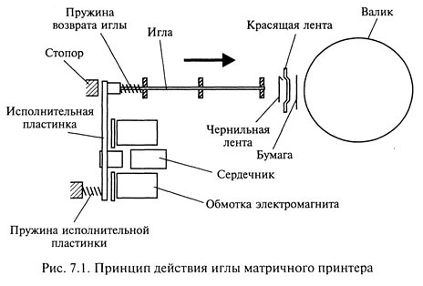
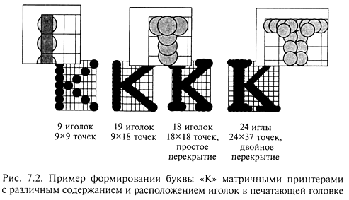
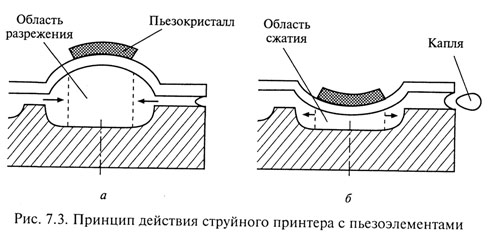
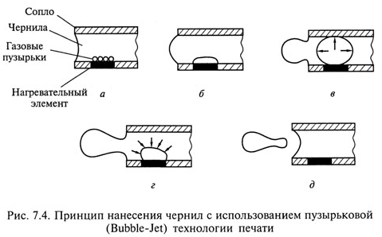
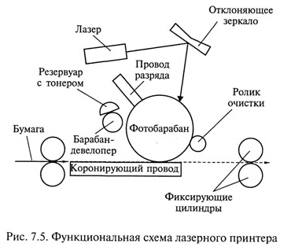
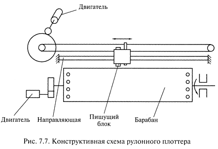

Печатающие устройства как периферийные устройства персональных компьютеров широко используются в различных областях: управленческой, инженерной, дизайнерской. Совершенствование печатающих устройств идет в направлении повышения скорости печати, качества изображения, надежности устройств и снижения стоимости эксплуатации и расходных материалов.
Для выведения текстовой и графической информации применяются принтеры, а для информации в виде чертежей - плоттеры.
Принтеры - устройства вывода данных из ЭВМ, преобразующие информационные ASCII-коды в соответствующие им графические символы и фиксирующие эти символы на бумаге.
Классификацию принтеров можно выполнить по целому ряду характеристик:
При работе в текстовом режиме принтер принимает от компьютера коды символов, которые необходимо распечатать из знакогенератора самого принтера. Многие изготовители оборудуют свои принтеры большим количеством встроенных шрифтов. Эти шрифты записаны в ROM принтера и считываются только оттуда. Для печати текстовой информации существуют режимы печати, обеспечивающие различное качество:
По способу нанесения изображения на бумагу принтеры подразделяются на принтеры ударного действия, струйные, фотоэлектронные и термические.
Принтеры ударного действия, или Impact-принтеры, создают изображение механическим давлением на бумагу через ленту с красителем. В качестве ударного механизма применяются либо шаблоны символов (типы), либо иголки, конструктивно объединенные в матрицы.
В матричных принтерах (Dot-Matrix-Printer) изображение формируется несколькими иголками, расположенными в головке принтера. Иголки обычно активизируются электромагнитным методом. Каждая ударная иголка приводится в движение независимым электромеханическим преобразователем на основе соленоида. Принцип действия иглы матричного принтера показан на рис. 7.1. Головка двигается по горизонтальной направляющей и управляется шаговым двигателем. Бумага втягивается валом, а между бумагой и головкой принтера располагается красящая лента. Многие принтеры выполняют печать как при прямом, так и при обратном ходе. 
Качество печати матричных принтеров определяется количеством иголок в печатающей головке.
В головке 9-игольчатого принтера находятся 9 иголок, которые, как правило, располагаются вертикально в один ряд. Диаметр одной иголки около 0,2 мм. Благодаря горизонтальному движению головки принтера и активизации отдельных иголок напечатанный знак образует как бы матрицу, причём отдельные буквы, цифры и знаки «заложены» внутри принтера в виде бинарных кодов. Для улучшения качества печати каждая строка пропечатывается два раза, при этом увеличивается время процесса печати и имеется возможность смещения при втором проходе отдельных точек, составляющих знаки.
Дальнейшим развитием 9-игольчатого принтера стал 18-игольчатый принтер с расположением иголок в головке в два ряда по 9 иголок. Однако широкого распространения принтеры такого типа не получили.
В 24-игольном принтере, ставшем современным стандартом матричных принтеров, иголки располагаются в два ряда по 12 штук так, что в соседних рядах они сдвинуты по вертикали. За счет этого точки на изображении при печати перекрываются. В 24-игольчатых принтерах имеется возможность перемещения головки дважды по одной и той же строке, что позволяет получить качество печати на уровне LQ - машинописное качество. На рис. 7.2 показан пример формирования буквы «К» матричными принтерами с различным содержанием и расположением иголок в печатающей головке. 
К числу несомненных преимуществ матричных принтеров относится возможность печати одновременно нескольких копий документа с использованием копировальной бумаги. Существуют специальные матричные принтеры для одновременной печати пяти и более экземпляров. Эти принтеры предназначены для эксплуатации в промышленных условиях и могут печатать на карточках, сберегательных книжках и других носителях из плотного материала. Кроме того, многие матричные принтеры оборудованы стандартными направляющими для обеспечения печати в рулоне и механизмом автоматической подачи бумаги, с помощью которого принтер самостоятельно заправляет новый лист.
Матричные принтеры фирмы Epson обеспечивают скорость печати свыше 300 знаков в 1 с.
Существенным недостатком матричных принтеров как принтеров ударного действия является шум, который достигает 58 дБ. Для устранения этого недостатка в отдельных моделях предусмотрен так называемый тихий режим (Quiet Mode), однако понижение шума приводит к снижению скорости печати в два раза. Другое направление борьбы с шумом матричных принтеров связано с использованием специальных звуконепроницаемых кожухов. Некоторые модели 24-игольчатых матричных принтеров обладают возможностью цветной печати за счет использования многоцветной красящей ленты. Однако достигаемое при этом качество цветной печати значительно уступает качеству печати струйного принтера.
В настоящее время матричные принтеры широкого практического применения уже не находят.
Первой фирмой, изготовившей струйный принтер, является Hewlett-Packard.
По принципу действия струйные принтеры отличаются от матричных безударным режимом работы за счет того, что их печатающая головка представляет собой набор не игл, а тонких сопел, диаметры которых составляют десятые доли миллиметра. В этой же головке установлен резервуар с жидкими чернилами, которые через сопла, как микрочастицы, переносятся на материал носителя. Хранение чернил обеспечивается двумя конструктивными решениями. В одном из них головка принтера объединена с резервуаром для чернил, причем замена резервуара с чернилами одновре¬менно связана с заменой головки. Другое предусматривает использование отдельного резервуара, который через систему капилляров обеспечивает чернилами головку принтера.
В струйных принтерах в основном используются следующие методы нанесения чернил: пьезоэлектрический, метод газовых пузырей и метод "Drop-on-Demand".
Пьезоэлектрический метод основан на управлении соплом с использованием обратного пьезоэффекта, который, как известно, заключается в деформации пьезокристалла под действием электрического поля.
Для реализации этого метода в каждое сопло установлен плоский пьезокристалл, связанный с диафрагмой, как показано на рис. 7.3. При печати находящийся в сопле пьезоэлемент, разжимая (см. рис. 7.3, а) и сжимая (см. рис. 7.3, б) сопло, наполняет его чернилами. Чернила, которые отжимаются назад, перетекают обратно в резервуар, а чернила, которые вышли из сопла в виде капли, оставляют на бумаге точку. Подобные устройства в основном выпускают компании Epson, Brother. 
Хотя струйный принцип печати известен уже давно, устройства с его использованием не нашли бы столь широкого применения, если бы не изобретение, ставшее основой для распространения струйной технологии. Первый и основной патент на нее принадлежит компании Canon. Hewlett-Packard также владеет рядом важных патентов в этой области, она создала первый струйный принтер с использованием пузырьковой технологии ThinkJet в 1985 г. Путем обмена лицензиями эти две компании получили подавляющее преимущество над конкурентами — сейчас им принадлежит 90 % европейского рынка струйных принтеров.
Метод газовых пузырей является термическим и называется методом инжектируемых пузырьков (Bubble-Jet) или пузырьковой технологией печати, которая проиллюстрирована на рис. 7.4. Каждое сопло печатающей головки принтера оборудовано нагревательным элементом в виде тонкопленочного резистора, который при пропускании через него тока за 7—10 микросекунд нагревается до высокой температуры. Температура, необходимая для испарения чернил, например, фирмы Hewlett-Packard, достигает примерно 330 °С. Возникающий при резком нагревании чернильный паровой пузырь (Bubble) стремится вытолкнуть через выходное отверстие сопла необходимую каплю жидких чернил диаметром менее 0,16 мм, которая переносится на бумагу. При отключении тока тонкопленочный резистор быстро остывает, паровой пузырь уменьшается в размерах, что приводит к разрежению в сопле, куда и поступает новая порция чернил.
Последовательность нанесения чернил с использованием пузырьковой технологии печати показана на рис. 7.4, а—д. Эту технологию использует фирма Canon. Поскольку в механизмах печати принтеров, реализующих метод газовых пузырей, меньше конструктивных элементов, чем в тех, что используют пьезоэлектрическую технологию, такие принтеры обладают большей надежностью и ресурсом. Кроме того, использование пузырьковой технологии позволяет добиться более высокой разрешающей способности печати. Однако, обеспечивая высокое качество при прорисовке линий, данный метод имеет недостаток при печати областей сплошного заполнения, поскольку они получаются несколько расплывчатыми. Применение струйных принтеров, механизм печати которых основан на методе газовых пузырей, целесообразно при необходимости распечатки графиков, гистограмм и других видов графической информации без полутоновых графических изображений. Для получения более качественной печати следует выбирать струйные принтеры, реализующие метод Drop-on-Demand. 
Метод Drop-on-Demand, разработанный фирмой Hewlett-Packard, использует, так же как и метод газовых пузырей, нагревательный элемент для подачи чернил из резервуара на бумагу. Однако в методе Drop-on-Demand для подачи чернил дополнительно применен специальный механизм, в то время как в методе газовых пузырей данная функция возложена исключительно на нагревательный элемент. Специальный механизм реализован на базе следующих физических явлений.
Как правило, в частицах жидкой фазы действует поверхностное натяжение, поддерживающее сферичность. У заряженных частиц чернил поверхностное натяжение снижается, что приводит к делению частицы на более мелкие. Свойство частиц расщепляться используется для получения туманообразных частиц чернил, которые поступают к выходным отверстиям сопел, управляемых электрическими сигналами.
Технология Drop-on Demand обеспечивает наиболее быстрое нанесение чернил, что позволяет существенно повысить качество и скорость печати. Цветное представление изображения в этом случае более контрастно. В данной технологии управление частицами чернил производится при постоянном отклоняющем поле путем регулирования их электрического заряда. Поэтому вылетающая из сопла каждая частица получает «свою» информацию в виде разной величины электрического заряда, что обеспечивает высокую скорость и качество печати.
В цветной печати в настоящее время преобладает струйная технология. Печатающие головки могут быть цветными и иметь соответствующее число групп сопел. Для создания полноцветного изображения используется стандартная для полиграфии цветовая схема CMYK. Согласно этой схеме цветное изображение формируется при печати наложением один на другой трех основных цветов: зелено-голубой (Cyan), пурпурный (Magenta) и желтый (Yellow). Теоретически их наложение должно давать черный цвет, но на практике в большинстве случаев получается серый или коричневый. Поэтому в качестве четвертого основного цвета добавляют ведущий цвет Key — черный (Black). Такую цветовую модель называют CMYK (Cyan-Magenta-Yellow-Key). Оттенки различных цветов могут быть получены путем сгущения или разрежения точек соответствующего цвета в фрагменте изображения (аналогичный способ используется для получения различных оттенков серого цвета при выводе монохромных изображений). Качество струйной цветной печати таково, что полученный полноцветный плакат практически невозможно отличить от изданного в типографии.
Уровень шума, создаваемый только двигателем, управляющим головкой струйного принтера, значительно ниже, чем у матричных принтеров, и составляет около 40 дБ.
Скорость печати струйного принтера, как и матричного, зависит от качества печати. При черновой печати струйный принтер по скорости значительно превосходит матричный. При печати в режиме с типографским качеством скорость значительно снижается. Цветная печать выполняется с еще меньшей скоростью. Отдельные модели струйных принтеров обеспечивают скорость до 15 страниц в минуту.
Разрешение струйных принтеров при печати графики достигает 2400x1200 dpi.
Качество печати струйного принтера в сравнении с матричным значительно выше, особенно при выводе на печать шрифта. Для моделей струйных принтеров с большим числом сопел характерно достижение качества печати лазерного принтера. Большое влияние на качество струйной печати оказывает качество бумаги и чернил.
Бумага для струйных принтеров с плотностью от 60 до 135 г/м2 позволяет получить достаточно высокое качество печати, причем может быть использована бумага для ксероксов (80 г/м2). В струйных принтерах, в отличие от матричных, бумага в рулоне не применяется, а несколько копий на струйном принтере можно получить только с помощью многократной печати одного и того же документа.
Чернила, применяемые для заправки картриджа струйных принтеров, должны быть специальными, предназначенными именно для данной модели принтера. Только в этом случае можно получить высокое качество печати и не испортить печатающую головку. Для повышения качества печати за счет снижения растекания чернил используются различные технические решения. Например, в отдельных моделях, выпускаемых фирмой Hewlett-Packard, для быстрого высыхания чернил применяется подогрев бумаги.
Основным недостатком струйных принтеров является засыхание чернил внутри сопла. В этом случае необходимо заменять печатающую головку. Принтеры некоторых типов нельзя выключать во время эксплуатации, поскольку в головке, оставшейся в промежуточной позиции, происходит интенсивное засыхание чернил. Многие модели струйных принтеров имеют режим парковки, при котором печатающая головка возвращается в исходное положение внутри принтера, что предотвращает засыхание чернил. В некоторых струйных принтерах имеются специальные устройства очистки сопел.
Подключение струйных принтеров к ПК производится через LTP-порт или через порт USB, которым, как правило, оснащены все компьютеры с процессорами Pentium III, IV и Celeron. Данные по USB-шине передаются быстрее, что позволяет несколько увеличить скорость печати.
Для просмотра фильма "Как это работает: струйный принтер (Discovery Chanel)" нажмите кнопку ВОСПРОИЗВЕДЕНИЕ.
Фотоэлектронные способы печати основаны на освещении заряженной светочувствительной поверхности промежуточного носителя и формировании на ней изображения в виде электростатического рельефа, притягивающего частицы красителя, которые далее переносятся на бумагу. Для освещения поверхности промежуточного носителя в лазерных принтерах используют полупроводниковый лазер, в светодиодных — светодиодную матрицу, в принтерах с жидкокристаллическим затвором — люминесцентную лампу.
Лазерные принтеры обеспечивают более высокое качество, чем струйные принтеры. Наиболее известными фирмами — разработчиками лазерных принтеров являются Hewlett-Packard.
Принцип действия лазерного принтера основан на методе сухого электростатического переноса изображения, изобретенном Ч.Ф.Карлсоном в 1939 г. и реализуемом также в копировальных аппаратах. Функциональная схема лазерного принтера приведена на рис. 7.5. Основным элементом конструкции является вращающийся барабан, служащий промежуточным носителем, с помощью которого производится перенос изображения на бумагу. Барабан представляет собой цилиндр, покрытый тонкой пленкой светопроводящего полупроводника. Обычно в качестве такого полупроводника используется оксид цинка или селен. По поверхности барабана равномерно распределяется статический заряд. Это обеспечивается тонкой проволокой или сеткой, называемой коронирующим проводом, или коротроном. На этот провод подается высокое напряжение, вызывающее возникновение вокруг него светящейся ионизированной области, называемой короной. 
Лазер, управляемый микроконтроллером, генерирует тонкий световой луч, отражающийся от вращающегося зеркала. Развертка изображения происходит так же, как и в телевизионном кинескопе: движением луча по строке и кадру. С помощью вращающегося зеркала луч скользит вдоль цилиндра, причем его яркость меняется скачком: от полного света до полной темноты, и так же скачкообразно (поточечно) заряжается цилиндр. Этот луч, достигнув барабана, изменяет его электрический заряд в точке прикосновения. Размер заряженной площади зависит от фокусировки луча лазера. Фокусируется луч с помощью объектива. Признаком хорошей фокусировки считают наличие четких кромок и углов на изображении. Для некоторых типов принтеров в процессе подзарядки потенциал поверхности барабана уменьшается от 900 до 200 В. Таким образом, на барабане, промежуточном носителе, возникает скрытая копия изображения в виде электростатического рельефа.
На следующем этапе на фотонаборный барабан наносится тонер — краска, представляющая собой мельчайшие частицы. Под действием статического заряда частицы легко притягиваются к поверхности барабана в точках, подвергшихся экспозиции, и формируют изображение уже в виде рельефа красителя.
Бумага втягивается из подающего лотка и с помощью системы валиков перемещается к барабану. Перед самым барабаном коротрон сообщает бумаге статический заряд. Затем бумага соприкасается с барабаном и притягивает благодаря своему заряду частички тонера, нанесенные ранее на барабан.
Для фиксации тонера бумага пропускается между двумя роликами с температурой около 180 °С. После окончания процесса печати барабан полностью разряжается, очищается от прилипших лишних частиц для осуществления нового процесса печати. Лазерный принтер является постраничным, т.е. формирует для печати полную страницу.
Процесс работы лазерного принтера с момента получения команды от компьютера до выхода отпечатанного листа можно разделить на несколько взаимосвязанных этапов, во время которых оказываются задействованными такие функциональные компоненты принтера, как центральный процессор; процессор развертки; плата управления двигателем зеркала; усилитель яркости луча; блок управления температурой; блок управления подачей листа; плата управления протяжкой бумаги; интерфейсная плата; блок питания; плата кнопок и индикации управляющей панели; дополнительные платы расширения ОЗУ. По сути, функционирование лазерного принтера подобно компьютеру: тот же центральный процессор, на котором сосредоточены главные функции взаимосвязи и управления; ОЗУ, где размещаются данные и шрифты, интерфейсные платы и плата управляющей панели, осуществляющие связь принтера с другими устройствами, узел печати, выдающий информацию на лист бумаги.
Цветное изображение с помощью лазерного принтера получается по стандартной схеме CMYK, используемой в струйных принтерах. В цветном лазерном принтере изображение формируется на светочувствительной фотоприемной ленте последовательно для каждого цвета. Имеются четыре емкости для тонеров и от двух до четырех узлов проявления. Лист печатается за четыре прохода, что существенно сказывается на скорости печати. Цветные лазерные принтеры оборудованы большим объемом памяти, процессором и, как правило, собственным винчестером. На винчестере располагаются разнообразные шрифты и специальные программы, которые управляют работой, контролируют состояние и оптимизируют производительность принтера. В результате цветные лазерные принтеры достаточно сложны и дорогостоящи.
Таким образом, лазерный черно-белый принтер рекомендуется использовать для получения высококачественной черно-белой распечатки, а для цветного изображения оптимальным является применение цветного струйного принтера.
Уровень шума лазерного принтера составляет в среднем 40 дБ, причем в режиме ойЧте это значение меньше.
Разрешение лазерного принтера по горизонтали и по вертикали зависит от следующих факторов. Вертикальное разрешение определяется шагом вращения барабана и в основном составляет 1/300-1/600 дюйма (1 дюйм = 2,54 см). Горизонтальное разрешение определяется числом точек в одной строке и ограничено точностью фокусировки лазерного луча. Многие модели лазерных принтеров имеют «несимметричное разрешение», например, 2400х 200 dpi (горизонтальное разрешение х вертикальное разрешение).
Скорость печати лазерного принтера измеряется в страницах в минуту и зависит от двух факторов: времени механической протяжки бумаги и скорости обработки данных, поступающих от ЭВМ, при формировании растровой страницы для печати. Как правило, лазерный принтер оснащен собственным процессором. Скорость печати определяется не только работой процессора, но и существенно зависит от объема памяти, которой оснащен принтер.
Память лазерного принтера, который обрабатывает информацию постранично, должна обеспечивать большое количество вычислений. Например, при разрешении 300х300 dpi на странице формата А4 насчитывается почти 9 млн. точек, а при разрешении 1200 х 1200 — более 140 млн. В основном используют принтеры с памятью от 8 до 16 Мбайт, причем цветные лазерные принтеры обладают еще большей памятью. Сетевой лазерный принтер имеет еще и внешнюю память (винчестер).
Интерфейс лазерных принтеров фирмы Hewlett-Packard выполнен в основном в виде USB-порта, а фирмы Samsung — еще и в виде LTP-порта. В отдельных моделях лазерных принтеров применяется беспроводный интерфейс на основе инфракрасных приемопередатчиков, который позволяет передавать файлы без кабеля.
В основном лазерные принтеры используются для печати на бумаге формата А4 и только некоторые модели обеспечивают печать на бумаге формата АЗ. Некоторые модели лазерных принтеров используют для работы бумагу в рулоне, выполняют двухстороннюю печать, имеют возможность выборки листов из нескольких лотков и раскладки напечатанных листов по нескольким приемным карманам.
Язык принтера является для него тем, чем для ПК операционная система, поскольку компьютер поставляет принтеру информацию лишь в виде бит, а дальнейшая ее обработка выполняется самим принтером. Пользователю достаточно знать общие команды и указания для принтера, чтобы, например, установить необходимое число копий распечатываемого документа или поля при печати.
Набор команд языка принтера обычно содержится в ROM принтера и соответственно интерпретируется его CPU. Наиболее распространенным языком для лазерных принтеров является язык PostScript — стандартизованный язык описания страницы, который предполагает мощное аппаратное обеспечение. К числу его преимуществ относят математическую форму передачи информации, которую должен печатать принтер.
Лазерный принтер в случае необходимости удобно использовать в качестве сетевого. Для рабочих групп, насчитывающих свыше пяти пользователей и большой объем печати (свыше 10 000 страниц в месяц), следует применять сетевые принтеры со скоростью печати 40 страниц в минуту, например модели Xerox NT40.
Светодиодные принтеры, или LED-принтеры (Light Emitting Diode), основаны на том же принципе действия, что и лазерные. Конструктивное отличие в том, что барабан освещается не лучом лазера, развертка которого обеспечивается механически управляемыми зеркалами, а неподвижной диодной строкой, состоящей из 2500 светодиодов. Эта строка описывает не каждую точку, а целую строку. Светодиодные принтеры находят применение у отечественных пользователей.
В принтерах с жидкокристаллическим затвором источником света служит люминесцентная лампа. Свет лампы экспонируется через жидкокристаллический затвор, своеобразный прерыватель света, управляемый от ПК. Скорость печати такого принтера ограничена скоростью срабатывания жидкокристаллического затвора.
Для просмотра фильма "Как это работает: лазерный принтер (Discovery Chanel)" нажмите кнопку ВОСПРОИЗВЕДЕНИЕ.
Термические принтеры — цветные принтеры высокого класса — применяются для получения цветного изображения с качеством, близким к фотографическому. Их применение весьма ограничено.
В термических принтерах используют три технологии цветной термопечати: струйный перенос расплавленного красителя (термопластичная печать); контактный перенос расплавленного красителя (термовосковая печать) и термоперенос красителя (сублимационная печать).
Термопластичная печать, или технология Termal Wax Transfer, основана на получении изображения нанесением на бумагу капель расплавленного воскообразного красителя. Для этого восковые стерженьки для каждого первичного цвета красителя постепенно расплавляются при температуре 90 °С специальным нагревательным элементом. Расплавленные красители попадают в отдельные резервуары, откуда подаются насосом в пьезоэлектрическую печатающую головку. Капли воскообразного красителя мгновенно застывают на бумаге, обеспечивая хорошее сцепление. Термопластичная печать исключает просачивание и растекание красителей, что позволяет получить высокое качество изображения, невысокую стоимость одной копии даже при двухсторонней печати. Однако скорость печати невысока.
Термовосковая печать, или технология Phast Change Ink-Jet, реализуется в принтерах с термопереносом. Принцип действия такого принтера в том, что термопластичное красящее вещество, представляющее собой краситель, растворенный в воске, наносится на тонкую лавсановую пленку толщиной 5 мкм. Пленка перемещается лентопротяжным механизмом, конструкция которого аналогична конструкции лентопротяжного механизма матричного принтера. На бумагу краситель переносится в том месте, где нагревательными элементами (аналогами сопел в струйных принтерах и игл в матричных) обеспечивается температура 70 — 80 °С. Для получения цветного изображения применяется метод CMYK, т.е. выполняются четыре прохода: по одному проходу для нанесения каждого первичного цвета и один — для черного цвета. В связи с этим скорость цветной печати принтеров с термопереносом 1...2 страницы в минуту. Стоимость выведенной на печать страницы с изображением выше, чем у струйных принтеров, поскольку используется специальная бумага. Преимуществом принтеров с термопереносом является получение высококачественных цветных изображений с воспроизведением до 16,7 млн цветов как на бумаге, так и на пленке.
Сублимационная печать основана на сублимации, т.е. на переходе вещества из твердого состояния в газообразное, минуя жидкую фазу. Технология сублимационной печати достаточно близка к технологии термопереноса. Принципиальным отличием является нагрев элементов печатающей головки до температуры 400 °С. Красящее вещество сублимирует с подложки и осаждается на бумаге или ином носителе. Комбинацией цветов красителей по методу СМУК достигается цветовая палитра фотографического качества. Широкое применение термических принтеров с сублимационной технологией ограничивается высокой стоимостью каждой копии изображения.
К числу самых известных производителей сублимационных принтеров относят Mitsubishi, Toshiba, Sony.
Для просмотра фильма "Как это работает: сублимационный принтер (Discovery Chanel)" нажмите кнопку ВОСПРОИЗВЕДЕНИЕ.
При выборе принтера следует принимать во внимание следующие факторы:
Одна из современных тенденций совершенствования принтеров связана со встраиванием в них Web-сайтов. Это позволяет обращаться к принтеру через IP-адрес с помощью обычного браузера. На Web-сайте принтера можно найти полную информацию о его текущем состоянии и выполнить его настройку.
Плоттер - устройство вывода из ЭВМ графической информации типа чертежей, схем, рисунков, диаграмм на бумажный или иной вид носителя. Помимо обычной бумаги для плоттеров используются носители в виде специальной пленки, электростатической или термореактивной бумаги.
Благодаря появлению первых перьевых плоттеров, разработанных фирмой CalComp в 1959 г., стало возможным автоматизированное проектирование, создание САПР в различных областях деятельности.
Современные плоттеры - широкий класс периферийных устройств для вывода графической информации, которые можно классифицировать по ряду признаков.
По принципу формирования изображения:
В планшетных плоттерах носитель размещается неподвижно на плоскости, над которой располагается конструкция, позволяющая перемещать пишущий блок одновременно по двум координатам. Конструктивная схема планшетного плоттера показана на на рис. 7.6. Пишущий блок укреплен на траверсе и перемещается в горизантальном направлении относительно планшета на котором закреплен носитель. В свою очередь, траверса с пишущим элементом перемещается в вертикальном направлении по другой траверсе. Перемещения осуществляются через блочно-тросовые системы, ходовые винты и зубчатые рейки двумя реверсивнымми двигателями, один из которых установлен на траверсе, а другой - на планшете.
В рулонных плоттерах, как показано на рис. 7.7, носитель размещается на барабане, который приводится во вращение в обе стороны реверсивным двигателем, а пишущий блок, приводимый в движениешаговым двигателем, перемещается по напрвлению в доль оси барабана. 
Несмотря на то что принципиально планшетные плоттеры могут обеспечивать более высокую точность вывода информации, на рынке больших плоттеров (формата А0 и А1) преобладают рулонные плоттеры, поскольку их характеристики удовлетворяют требованиям большинства задач.Общий вид рулонного плоттера показан на рис. 7.8.
Дополнительные преимущества рулонных плоттеров следующие: они более компактнны иудобны, работают с чертежами очень большой длины(более 10 м) или выводят несколько десятков чертежей один за другим, автоматически отматывая и отрезая от рулона лист необходимого размера.Плоттеры малого формата (А3) обычно планшетные.
В зависимости от типа пищущего блока плоттеры подразделяются:
Перьевые плоттеры являются электромеханическими устройствами векторного типа и создают изображение при помощи пишущих элементов, обобщенно называемых перьями. Пишущие элементы отличаются один от другого используемым типом жидкого красителя (одноразовые и многоразовые; шариковые, фибровые, пластиковые; с чернилами на водной или масляной основе; заполненные под давлением) и крепятся в держателе пишущего узла, который имеет одну степень свободы перемещения в рулонных плоттерах и две степени свободы перемещения в планшетных.
Отличительной особенностью ПП является высокое качество получаемого изображения, в том числе цветного при использовании цветных пишущих элементов. С помощью ПП традиционно выводят графические изображения, получаемые в системах автоматизированного проектирования, например в AutoCAD. Скорость вывода информации в ПП невысока, поэтому производители плоттеров используют все более быструю механику, пытаясь одновременно оптимизировать процедуру рисования, количество перемещений пишущего узла и бумаги, число смен пера и остановок.
Ведущие изготовители перьевых плоттеров: CalComp, Mutoh (карандашно-перьевые плоттеры), Summagraphics (Houston Instruments).
Кроме перьевых плоттеров, которые являются векторными, все остальные типы плоттеров — растровые, т.е. используют дискретный способ создания изображения.
Струйные плоттеры являются устройствами вывода графической информации растрового типа, пишущие узлы которых используют струйную технологию печати. Из всего разнообразия стРУйных технологий печати наибольшее распространение в пишущих узлах плоттеров получила «пузырьковая». Существует три Разновидности струйных плоттеров: монохромные, цветные (полноцветные) и с возможностью цветной печати (color capable).
Струйные плоттеры с возможностью цветной печати позволяют выполнять чертежи с цветными линиями и однотонно закрашенными областями. Они являются струйным аналогом обычных перьевых плоттеров.
Современные струйные плоттеры можно разделить на два класса: плоттеры для САПР и полноцветные (универсальные) плоттеры. Плоттеры для САПР ориентированы на печать векторной графики, прежде всего монохромных чертежей. Полноцветные плоттеры способны печатать любую графику — от чертежей до плакатов с Фотографическим качеством изображения — и находят все более широкое применение, в том числе в САПР. В пишущих узлах полноцветных струйных плоттеров используется четыре группы сопел, в каждую из которых поступает краситель определенного Цвета согласно технологии цветной печати СМУК.
Приемлемая цена, высокое качество печати и большие возможности сделали струйные плоттеры серьезным конкурентом перьевых устройств. Однако данные устройства, как и перьевые плоттеры, не вполне устраивают пользователей с большими объемами выводимой графической информации. Для высокой производительности целесообразно применять плоттеры прямого вывода или лазерные.
Электростатические плоттеры основаны на технологии создания скрытого электрического изображения (потенциального рельефа) на поверхности носителя, представляющего собой специальную электростатическую бумагу, рабочая поверхность которой покрыта тонким слоем диэлектрика, а основа пропитана гидрофильными солями, позволяющими получить требуемую для нее влажность и электропроводность. Для записи информации используются пишущие узлы, представляющие собой блоки электродов.
Потенциальный рельеф образуется при осаждении на поверхность диэлектрика свободных зарядов, образующихся при возбуждении электродов высоковольтными импульсами напряжения. Когда бумага проходит через проявляющий узел с жидким намагниченным тонером, его частички остаются на заряженных участках бумаги. Полная цветовая гамма получается за четыре цикла создания скрытого изображения и прохода носителя через четыре проявляющих узла с соответствующими тонерами согласно технологии СМУК.
Отличительные особенности данного типа плоттеров — скорость, надежность, качество и производительность. Их применяют при высокой степени автоматизации проектных работ. Изображение, полученное на ЭП, весьма устойчиво и не выгорает под действием ультрафиолетовых лучей, а стоимость электростатической бумаги соответствует стоимости высококачественной типографской бумаги. Однако электростатические плоттеры отличаются высокой себестоимостью и необходимостью их тщательного обслуживания.
Плоттеры прямого вывода изображения, или термографические, используют в качестве носителя специальную термобумагу, темнеющую под воздействием тепла. Монохромное изображение создается миниатюрными нагревателями, сформированными в виде «гребенки», каждый из которых имеет самостоятельное управление. При перемещении термобумаги относительно «гребенки» ее цвет меняется в местах нагрева.
Простота механизма печати обеспечивает скорость вычерчивания до 50 мм/с с разрешением до 800 dpi. Термобумага обычно подается из рулона. ПВИ применяются в крупных проектных организациях как для вывода проверочных копий, так и для изготовления окончательного пакета чертежей изделия.
Лазерные плоттеры базируются на электрографической технологии, реализованной в лазерных принтерах. В качестве источника излучения в плоттерах применяются лазеры и полупроводниковые светодиодные матрицы (Light Emitted Diod - LED). LED-плоттеры относятся к классу растровых, когда каждой точке строки изображения соответствует свой светодиод (например, при разрешении 400 точек на дюйм линейка для формата А1 состоит из 9600 диодов).
Лазерные и LED-плоттеры ввиду высокого быстродействия в первую очередь рекомендуются пользователям с большими объемами работ. Для повышения эффективности такие плоттеры чаще всего используются как сетевые устройства. К числу их преимуществ относится возможность работать на обычной бумаге, что сокращает удельные затраты при эксплуатации.
LED-плоттеры становятся все более популярными, хотя по уровню стоимости находятся в высшей ценовой категории. Области применения LED-плоттеров: сложный технический дизайн, архитектура, документооборот, картография.